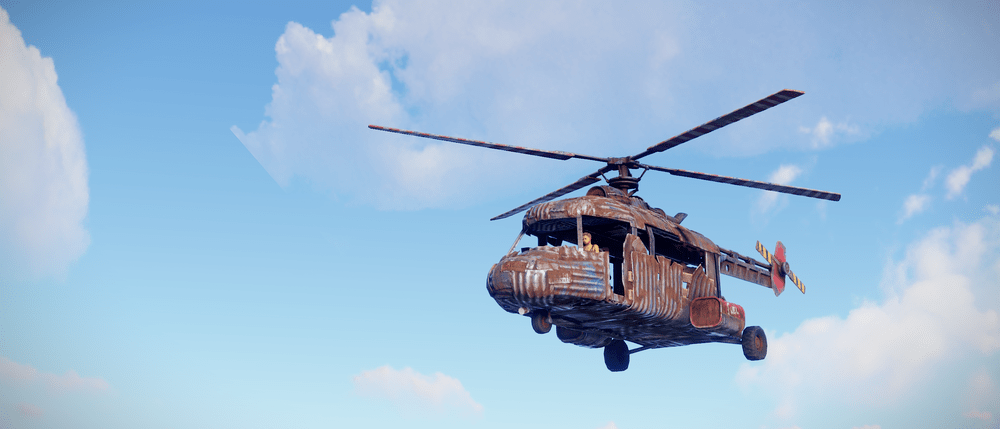
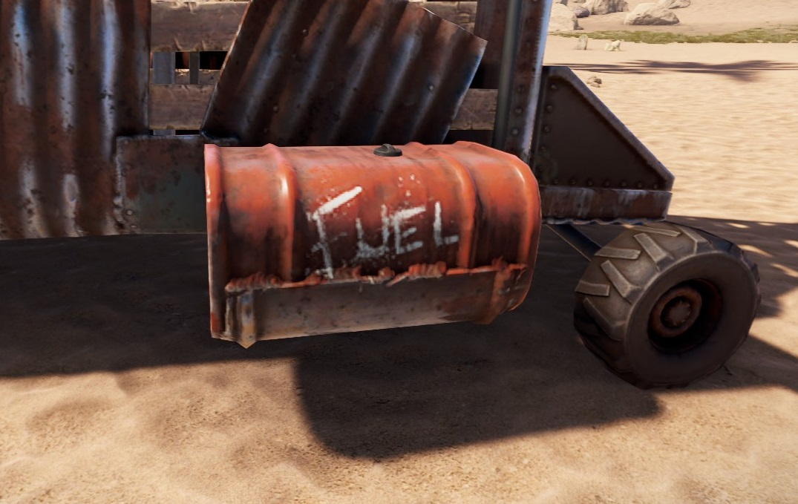

2019年9月6日に実装された空中の乗り物です。
どこにあるの？
4kマップ（デフォルト）の場合どこかの地上に5台スポーンします
※2020年7月3日の車両実装により、自然スポーンしなくなりました。
入手方法は➡バンディットキャンプのエアーウルフというお店での購入
どうやって動かすの？
燃料を入れるところはヘリの左右に赤いタンクが2つついているのでどちらかに入れます。 燃料は低質燃料（毎分30低質）
また現在の燃料がどれぐらいあるかは運転席の真ん中のゲージから確認が出来ます。
- ①：燃料計。赤いラインに針が来ると燃料切れが近い
- ②：方向。コンパスがあるためあまり用途はない
- ③：速度計。ヘリの速度が具体的にわかる。
- ④：高度計。地面からの高度を示す
操作方法は？
マウスで方向(角度）、W,Sで高度の調整、A,Dで左右移動。 例として、マウスを奥方向にほんの少し動かすと加速、手前方向に動かすと減速になります。(感度にもよりますが、ほんの少しじゃないと墜落します) 墜落しないコツとして、ヘリの車体を水平にすると墜落しにくいです。←（あくまでも例です）
※このヘリはミニコプターよりも操作感がとても重くなりますのでミニコプターの感覚で運転すると墜落します。
duck(ctrlキー)を押しながらWAで、車のように地上で運転できます(前後のみで左右へは動きません。) 何人まで乗れるの？
何人まで乗れるの？
前の座席に二人。座席は「X」キーで変更できますが、※運転中に助手席に移るとエンジンが停止して急激に高度が下がります。 後ろには座席がないが、1チーム分は余裕で乗ることが可能
耐久は？直せるの？
耐久は1000。修理の方法は、ハンマーを使って金属片で修理できます。また壊れる直前からの修復で最大「金属片:750」の資材を消費します。
風化するの？
どこに置いても風化します。ですが建築権内かつ、屋根がある所では風化の速度が半分になります。
屋外の場合3時間 屋内の場合 6時間 で壊れます。
迎撃手段は？
SAMサイト(地対空ミサイル)での迎撃。(8発のミサイルで壊れます。) 銃でもダメージは入ります